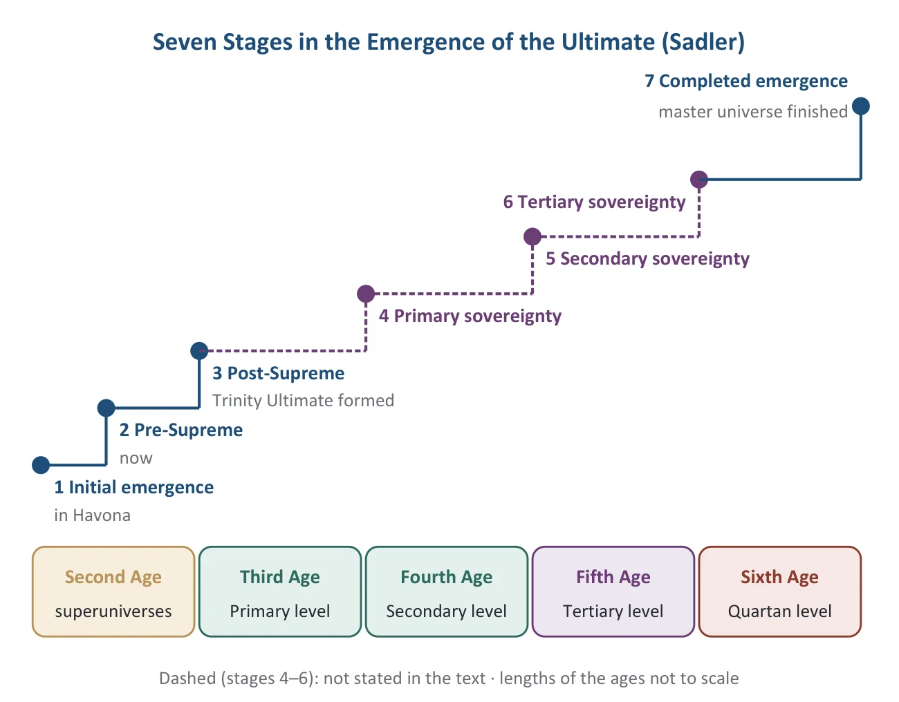
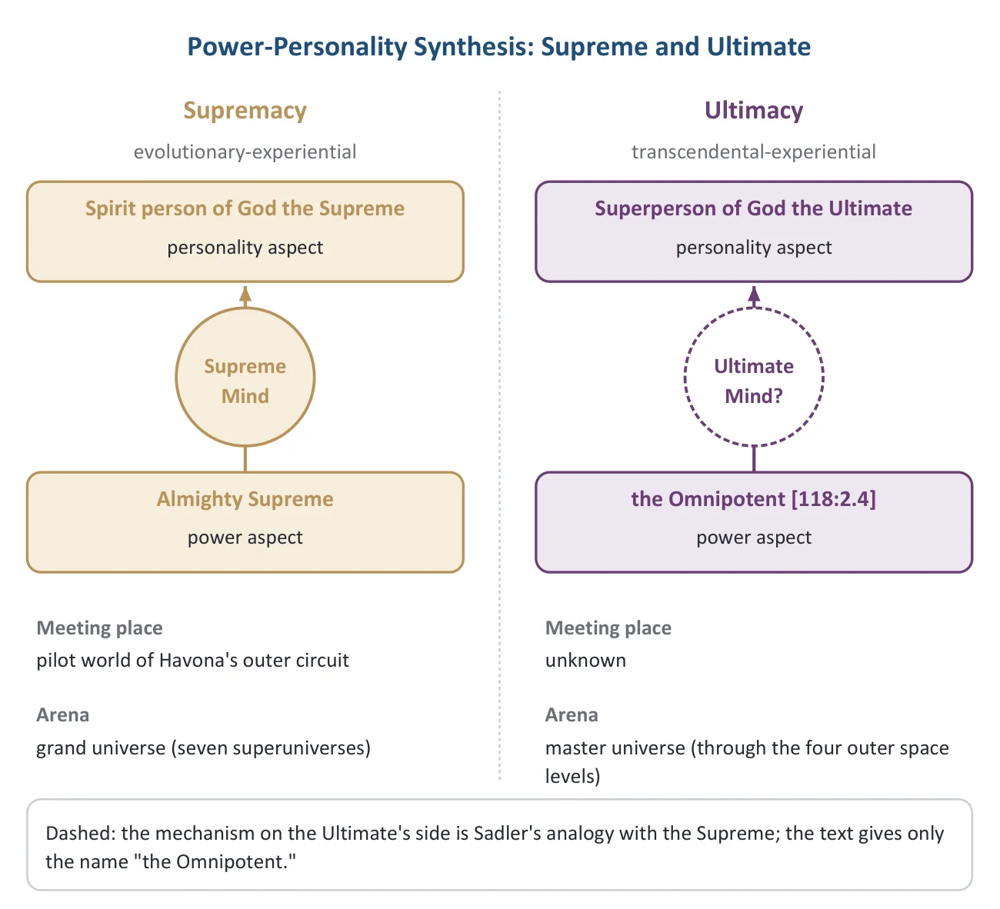

Original : Annexe XVIII, La nature de Dieu l’Ultime (p. 397–414)
Parmi les Déités expérientielles, Dieu l’Ultime est la deuxième. Alors que Dieu le Suprême émerge avec l’achèvement du grand univers, Dieu l’Ultime n’émerge que lorsque le maitre univers tout entier est terminé, y compris les quatre niveaux d’espace extérieur. Sadler divise cette émergence en sept stades, examine la nature et les attributs de l’Ultimité ainsi que ses relations avec divers êtres, et montre clairement que l’« Ultimité de la Déité » n’est pas un être, mais un niveau sur lequel la Déité fonctionne. C’est une annexe où les affirmations du texte sont rares et les inférences de Sadler nombreuses.
L’Introduction place Dieu le Suprême, Dieu l’Ultime et Dieu l’Absolu sur les premier, deuxième et troisième niveaux d’expression de Déité unifiante.
6. Dieu l’Ultime — Le Dieu en cours d’extériorisation du supertemps et de l’espace transcendé. Le second niveau expérientiel où se manifeste la Déité unifiante.0:2.17
Sadler suggère que, si l’espace et le temps requis pour l’émergence de la Suprématie sont représentés par « 1 », alors, selon les calculs des deux annexes précédentes, l’émergence de l’Ultimité peut être symbolisée par « 100 millions » et celle de Dieu l’Absolu par « l’infini ». L’émergence de Dieu l’Absolu se situera au-delà du maitre univers, peut-être liée à un Cosmos Infini sans limites.
L’Ultimité n’est pas une Déité éternelle dans le passé. Elle est éternelle dans le futur, mais a eu un commencement dans le temps.
Le Suprême et l’Ultime sont entièrement expérientiels.0:7.5
Le Suprême émerge en trois stades : comme personne spirituelle dans Havona, dans la synthèse personnalité-pouvoir actuelle, et dans l’évolution achevée à venir. Sadler estime que la croissance de l’Ultimité, qui s’étend sur cinq âges de l’univers et cinq niveaux d’espace, devrait comporter davantage de stades, et il en propose sept. Il s’appuie sur le fait que la souveraineté d’un Fils Créateur aussi bien que la personnalisation d’un Esprit Créatif se déploient en plusieurs stades.

Comme le transcendantal précède le fini dans l’ordre historique, Sadler en déduit que l’Ultimité est apparue dans Havona en même temps que la Suprématie, ou même plus tôt. Le texte affirme clairement cette présence dans Havona.
Mais, de même que le Suprême est déjà spirituellement et personnellement présent dans Havona, de même l’Ultime y est également présent, mais au sens absonite et superpersonnel.106:4.3
Sadler conjecture que, même pendant le « temps de quiétude » qui a précédé les superunivers, des réalités absonites non révélées de Havona ont pu être modifiées conformément aux desseins de l’Ultime. Dans le deuxième âge actuel, l’Ultime est encore une réalité en voie de « devenir », mais déjà active. Une partie de l’imprévisibilité des énergies émergentes peut s’expliquer par son activité [12:6.6], et les mortels ascendants prennent conscience de lui lorsqu’ils entrent dans le Corps de la Finalité.
et le finalitaire fait maintenant face au défi de Dieu l’Ultime.27:7.10
Sadler reconnait cependant que, si l’on sait quelque chose du mécanisme de la synthèse personnalité-pouvoir du Suprême, on ne sait absolument rien du mécanisme correspondant de l’Ultime.
Quand les superunivers seront achevés et que le Suprême aura émergé, il gouvernera ces créations tandis que l’Ultime exercera le supercontrôle [118:2.4], et la première Trinité expérientielle, dont le Suprême est membre, pourra effectivement se former. Sadler s’attend à ce que l’Ultimité entre dans ce stade « post-suprême » lorsque s’ouvrira le niveau d’espace primaire.
Les trois stades suivants se situent dans un territoire où le texte se tait. Sadler suppose que la souveraineté de l’Ultime s’accroitra d’un degré à l’achèvement de chaque niveau d’espace extérieur, et il nomme ces stades Souveraineté Primaire, Secondaire et Tertiaire. Cette stratification n’a pas d’équivalent dans la croissance de la Suprématie, qui s’achève à l’intérieur d’un seul niveau d’espace. À chaque stade se produirait une nouvelle personnalisation (peut-être une superpersonnalisation) de l’Ultimité, un peu comme un Esprit Créatif devient de plus en plus personnel à mesure que croit son univers local.
Le stade final arrive quand la croissance atteint le niveau d’espace quaternaire et que le maitre univers tout entier est terminé. À ce moment, la première Trinité expérientielle devient elle aussi pleinement unifiée. Parce que le maitre univers est subinfini et quantitativement limité, ce but peut être atteint. L’accomplissement de ce double but, un univers achevé et une Trinité unifiée, est l’émergence de Dieu l’Ultime.
L’extériorisation totale de l’Ultime implique le parachèvement de la création du maitre univers, et comporte la pleine émergence de cette Déité transcendantale.106:4.2
Outre l’unification de la Trinité, le succès des membres de Dieu le Septuple postérieurs à Havona et le fonctionnement expérientiel de l’Ultimité elle-même jouent aussi leur rôle dans cette émergence. En s’appuyant sur ce qui est dit du Suprême, Sadler en déduit que l’Ultime émergé deviendra le souverain effectif du maitre univers et placera ses citoyens face à Dieu l’Absolu comme leur prochain défi.
Dieu le Suprême est évolutionnaire-expérientiel, Dieu l’Ultime transcendantal-expérientiel et Dieu l’Absolu existentiel-expérientiel. Sadler fait remarquer que seul l’Ultime se tient entre deux Trinités expérientielles : il émerge par l’unification de la première et devient aussitôt membre de la seconde. C’est là que Sadler cherche la raison pour laquelle l’Introduction appelle l’Ultime une Déité « se projetant d’elle-même ».
Le Livre d’Urantia définit l’Ultime émergé en ces termes :
L’Ultime consiste en une unité de nombreuses qualités considérées diversement. Sa conception par les hommes devrait bien inclure au moins les phases d’ultimité qui gèrent l’autorité, qui sont personnellement expérimentables et qui unifient par des tensions, mais la Déité extériorisée comporte beaucoup d’autres aspects non révélés.106:8.15
Sadler examine ces phases une à une. La phase « personnellement expérimentable » désignerait la (super)personnalité de l’Ultime, que d’autres personnalités et superpersonnalités pourront un jour contacter. La phase qui « gère l’autorité » est l’aspect de pouvoir au sein de l’Ultimité, de même que le Suprême a le Tout-Puissant Suprême, et le texte en fournit le nom.
Dans ce cas, Dieu l’Ultime commencerait à devenir manifeste aux univers du temps en tant que Tout-Puissant transcendantal (l’Omnipotent) exerçant le supercontrôle du supertemps et de l’espace transcendé relatifs aux fonctions administratives du Tout-Puissant Suprême.118:2.4
La phase qui « unifie par des tensions » pourrait être l’activité par laquelle le Mental Ultime relie l’Omnipotent à Dieu l’Ultime, comme le Mental Suprême relie le Tout-Puissant Suprême à Dieu le Suprême. Les « aspects non révélés » signalent que la nature de l’Ultime est bien plus complexe que celle du Suprême. Sadler conclut que la personnalité de l’Ultime est inséparable des phases non personnelles de sa Déité.

Le texte dit très peu de chose du mental ultime.
Le mental infini ignore le temps, le mental ultime transcende le temps, le mental cosmique est conditionné par le temps.9:4.4
Par analogie avec le Mental Suprême, Sadler conjecture que le Mental Ultime sera lui aussi conféré par l’Esprit Infini lorsque la synthèse commencera, et que les Sept Maitres Esprits et Majeston lui serviront de réservoir et de point de convergence. Sur l’esprit, il y a quelques indices de plus.
Les porteurs de vie Melchizédeks croient que leurs enfants midsonites recevront, un jour, de Dieu l’Ultime, le don transcendantal et éternel de l’esprit d’absonité.36:4.8
Sadler en conclut que l’Ultime possède un esprit qu’il peut conférer aux créatures, et que les « facultés absonites célestes » que possèdent les Maitres Architectes [31:9.1] doivent également se trouver dans l’Ultime. Il comprend aussi l’Ultime comme superpersonnel, tout en soulignant que, parce que le prépersonnel, le personnel et le superpersonnel sont liés entre eux [0:5.4], les personnalités peuvent elles aussi entrer en contact avec lui.
L’attribut le plus caractéristique de l’Ultimité est la transcendance du temps et de l’espace. Le fini est lié par le temps et l’espace ; l’absolu est sans temps et sans espace ; l’absonite est en relation avec l’un et l’autre, mais n’est lié par aucun des deux.
Où que ce soit dans le maitre univers, quand le temps et l’espace sont transcendés, ce phénomène absonite est un acte de l’Ultimité de la Déité.0:1.12
L’Introduction dépeint l’Ultime comme une Déité omnipotente, omnisciente et omniprésente [0:1.10]. Sadler lit chacun de ces trois attributs avec ses limites.
L’omnipotence n’implique pas le pouvoir de faire ce qui est infaisable, des actes non divins. L’omniscience n’implique pas non plus la connaissance de ce qui est inconnaissable.3:3.5
L’omniscience est une prescience qui découle de la transcendance du temps, mais elle ne diminue pas le libre arbitre des créatures. L’omniprésence découle de la transcendance de l’espace, et la présence spatiale de l’Ultime s’étend jusqu’à l’extrême bord du maitre univers.
L’Ultime est présent dans l’espace, ou le sera ultérieurement, jusqu’aux bordures extérieures du quatrième niveau d’espace extérieur.12:6.13
De même que le Suprême représente dans une certaine mesure la Trinité du Paradis sur le niveau fini, l’Ultime représente la Trinité au sens qualifié sur le niveau absonite. Quand nous essayons de nous représenter la Trinité comme une seule personne, nous pensons à Dieu le Suprême ; les Transcendantaux, de la même manière, pensent à Dieu l’Ultime [10:8.2]. Les trois Déités du Paradis collaborent présentement avec l’Ultime non pas personnellement, mais en tant que Trinité [10:7.3]. Sadler suppose que cette relation changera quand les Déités expérientielles sortiront de leur ère prépersonnelle. En dehors de Havona, la présence du Père est limitée par le Suprême et conditionnée par l’Ultime [3:2.15].
Par rapport au maitre univers, l’Ultime se tient à mi-chemin entre les Absolus et le Suprême. L’apparition du maitre univers dépend des Absolus pour son potentiel, de l’Ultime pour sa direction et du Suprême pour sa coordination évolutionnaire [12:6.9–11]. Sadler interprète cela comme signifiant que l’Ultime « organise créativement » à l’avance les potentiels des trois Absolus, de sorte que les créateurs du niveau subabsolu puissent les transmuer.
La double présence du Suprême et de l’Ultime constitue l’association fondamentale de la Déité subabsolue et dérivée, car tous deux sont interdépendants et complémentaires pour accomplir la destinée.118:0.9
Selon les termes mêmes de Sadler, l’histoire expérientielle du maitre univers dans son ensemble, qui embrasse la création, l’évolution et l’extériorisation, est pour une grande part l’histoire du Suprême et de l’Ultime.
Sadler considère cinq groupes liés à l’Ultime. Les Transcendantaux, qui ne sont ni des créateurs ni des créatures, mais des « extériorisés » [30:1.92] ; les Maitres Architectes, leur corps gouvernant ; et les maitres organisateurs de force, qui travaillent sous la juridiction des Architectes, seront tous soumis à Dieu l’Ultime. Le quatrième groupe est celui des Ajusteurs Personnalisés, qui agissent comme agents d’exécution des Architectes du Maitre Univers et accomplissent l’inattendu dans les domaines transcendantaux de Dieu l’Ultime [109:7.3].
Ils sont omnipersonnels — ils sont avant la personnalité, ils sont la personnalité et ils sont après la personnalité.109:7.4
Le cinquième groupe est celui des Vice-Gérants Qualifiés de l’Ultime, dont le texte rapporte seulement l’existence [106:4.3]. De même que les Superviseurs Non Qualifiés du Suprême ne représentent que Dieu le Suprême [55:12.4], Sadler raisonne par analogie que ces vice-gérants représentent Dieu l’Ultime, servant de conseillers avant l’établissement de sa souveraineté et de superadministrateurs ensuite. Le contraste entre « non qualifiés » et « qualifiés » dans leurs titres laisse entendre que la représentation assurée par les seconds est incomplète à certains égards.
L’« Ultimité de la Déité » n’est le nom ni d’une seule Déité, ni d’un seul être, ni même d’une seule Trinité. C’est un niveau de réalité sur lequel une phase de la Déité Totale est active : le septième niveau, le niveau « ultime ». Sadler identifie trois réalités qui l’occupent : la Trinité de l’Ultimité, c’est-à-dire la Trinité du Paradis telle qu’elle fonctionne par rapport au niveau absonite ; l’Ultime Trinité expérientielle, qui coordonne le maitre univers ; et Dieu l’Ultime, qui émerge de l’unification de cette Trinité. Leur interaction apparait comme providence sur le niveau transcendantal. La providence est un « supercontrôle autre-que-personnel » qui s’étend depuis Dieu le Septuple, en passant par le Tout-Puissant, jusqu’à l’Ultimité de la Déité elle-même [118:10.4].
La Suprématie sert le grand univers d’une manière finie ; l’Ultimité sert le maitre univers d’une manière absonite.
Le Suprême est l’unification de la Trinité comprise par les êtres finis. L’Ultime est l’unification de la Trinité du Paradis comprise par les êtres absonites.0:9.2
La division de l’émergence de l’Ultime en sept stades, et en particulier les stades de Souveraineté Primaire, Secondaire et Tertiaire, est une proposition de Sadler et non une affirmation du texte. Même au sujet des stades de la souveraineté d’un Fils Créateur, qu’il cite à l’appui, le texte parle prudemment de « six et peut-être par sept » stades [21:3.4]. En outre, le passage que Sadler cite comme source des « facultés absonites célestes » (31:9.5) est en réalité 31:9.1.